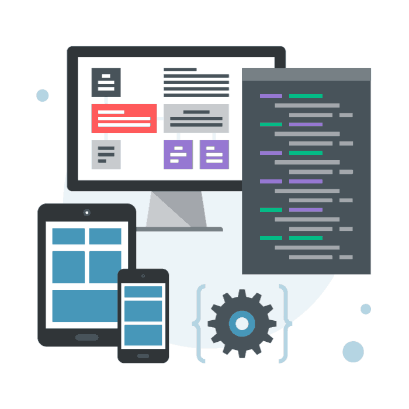
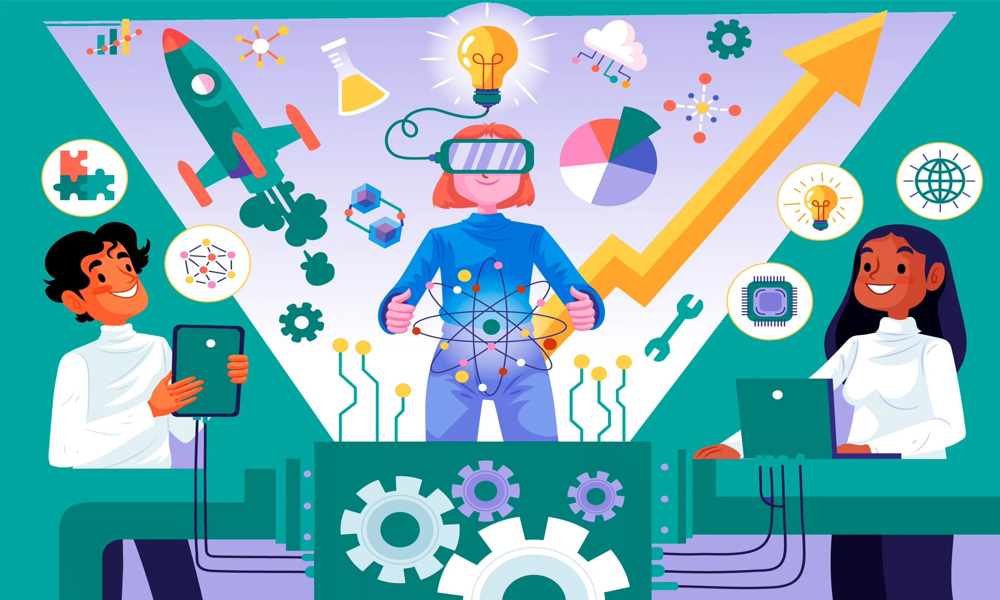

Etapas del proceso de creacion multimedia.
Producir un documento multimedia es diseñar sus contenidos, así como el programa informático que permite acceder a los mismos. Un producto multimedia puede prepararse para diferentes soportes: offline (CD-ROM, DVD...) u online (mediante una red de transmisión).
Un producto multimedia interactivo se desarrolla en diferentes etapas, estas etapas del cursos y másteres son:
° Planteamiento o análisis
° Diseño
° Desarrollo
° Evaluación
° Documentación
° Implementación
° Actualización
° Planteamiento o análisis



